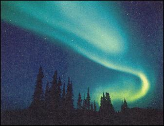

If scientists' predictions are accurate then the year 2000, and in particular the month of March will witness the latest peak in an approximately 11-year-long cycle of solar activity. The results may be like those seen on March 13, 1989, a day when an amazing northern lights display was visible as far south as Central America and 6 million people in Montreal, Canada, lost their electricity due to disruptions caused by the mighty magnetic storm.
What is solar activity? It includes such events on the sun as the huge expulsions of atomic particles called "solar flares" and "coronal mass ejections," phenomena that can charge up Earth's magnetic field to awesome ways. Solar activity is often marked by features called "sunspots", which appear on the sun's blindingly bright surface. Sunspots look dark against the solar surface because they are cooler than the sun. But still there areas are thousands of degrees Fahrenheit and, if you could separate one out from the sun, it would shine brilliantly by itself against the black of space.
For the next few years there will be much greater than average numbers of sunspots and increased chances of aurora borealis (northern lights) spreading farther south across U.S. skies. I'll give more information about how to observe these two phenomena in upcoming issues.
- Fred Schaff
|
 |
|
|